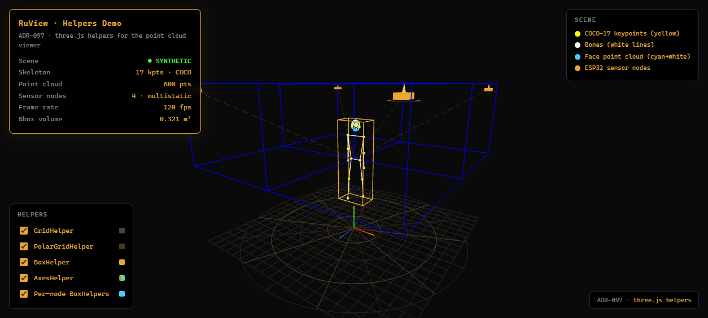
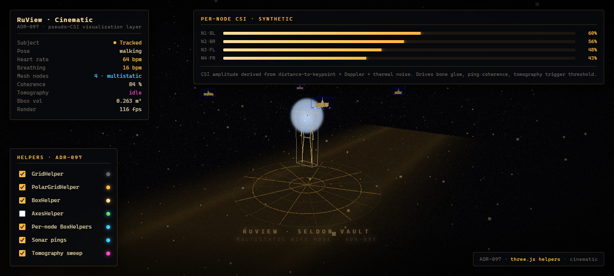
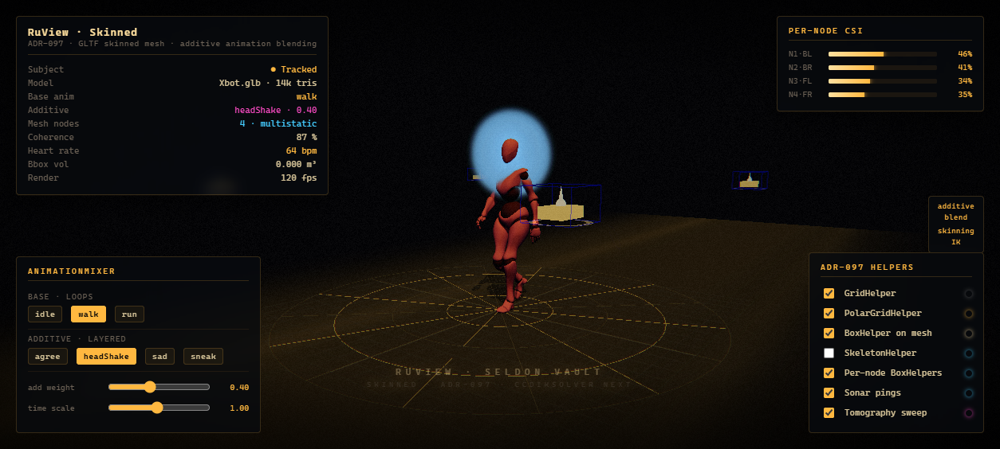
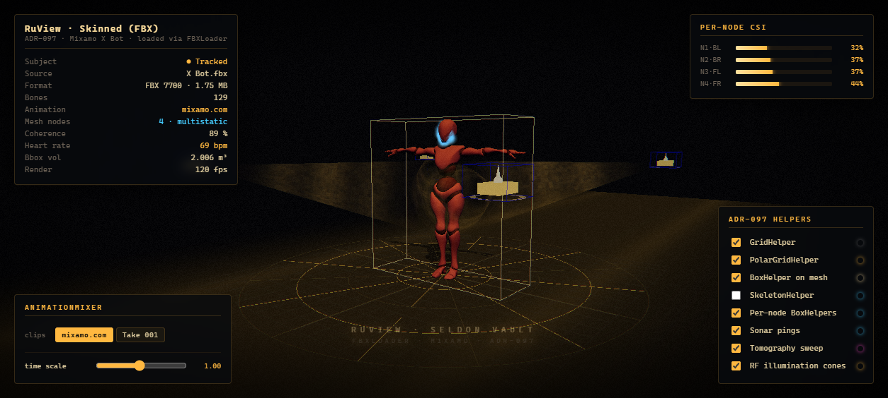
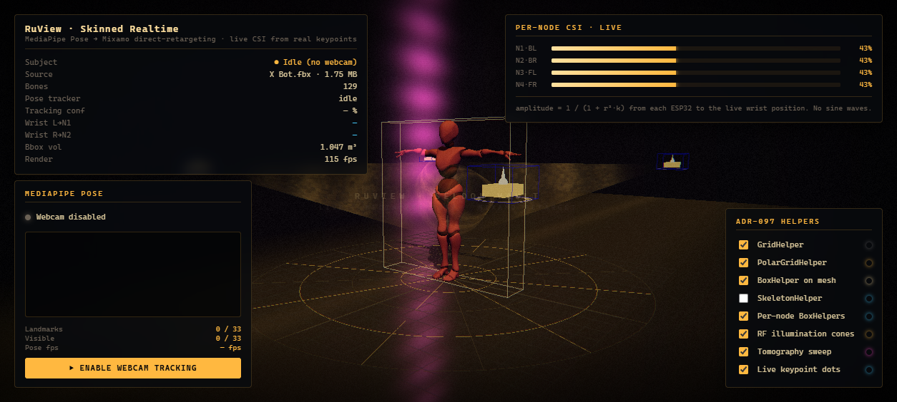

Five progressively richer browser demos of the ADR-097 sensing-helpers scene, ending with a live MediaPipe-Pose → Mixamo X Bot retargeting pipeline driven by a real ESP32 CSI feed.



assets/X Bot.fbx.

X Bot.fbx file is intentionally not redistributed in
this deployment — it's licensed for end-users to download from
mixamo.com directly.
To run these locally: clone the repo, download X Bot.fbx
(FBX Binary, T-Pose, Without Skin) into
examples/three.js/assets/, then run
python examples/three.js/server/serve-demo.py.